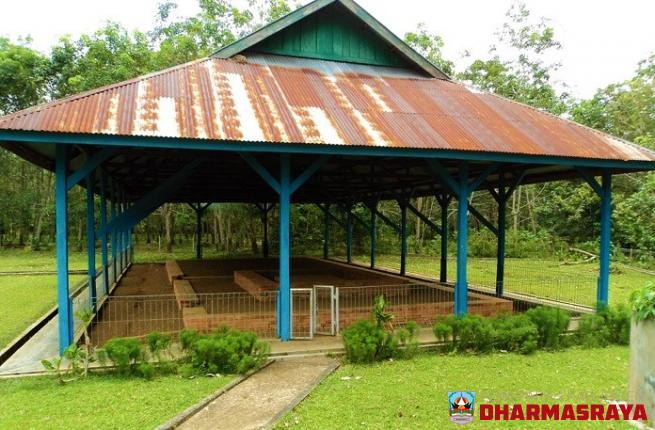
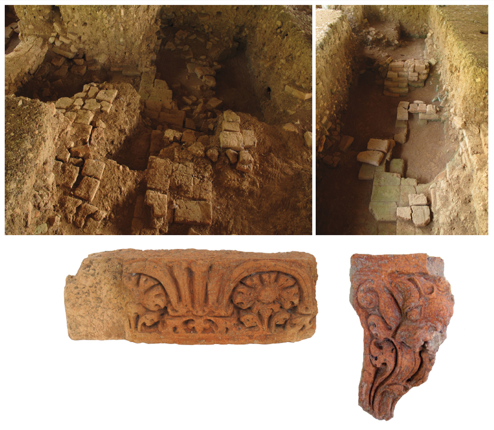

Candi-Candi di Sumatera Barat
Banyak orang tidak tahu bahwa di Sumatera Barat yang dikenal sebagai daerah Adat Basandi
Syarak dan Syarak Basandi Al-Quran banyak dipengaruhi budaya dengan Pengaruh Hindu Budha.
Sebelum agama Islam masuk atau bersama pengaruh Islam masuk ke wilayah Sumatera Barat
(Minangkabau) sudah berkembang Pengaruh Hindu-Budha. Pengaruh Hindu Budha ini bisa kita
lihat dari peninggalannya, seperti prasasti dan Candi. Kita menemukan candi dan prasasti
ini dibeberapa kabupaten seperti Dharmasraya, Pasaman, Tanah Datar serta Agam.
Pantai Candi Padang Roco

Situs Candi Padang Roco terletak di Jorong Sungai Langsek, Kenagarian Siguntur, Kecamatan
Sitiung, Kabupaten Dharmasraya. Secara geografis situs ini terletak pada sebuah dataran
pada ketinggian sekitar 160 mdpl dan terletak pada posisi 1 LS dan 109 44' BT. Lokasi
candi sendiri berada di sebuah pulau yang dipisahkan oleh sebuah sungai dengan nama Sungai Dareh.
Candi Bukik Awang Maombiak

Candi Bukik Awang Maombiak terletak di bagian atas bukit kecil di Jorong Siguntur yang tidak terlalu
tinggi. Tepatnya di Desa Nagari Siguntur, Kecamatan Sitiung, Kabupaten Dharmasraya, Sumatera Barat.
Oleh penduduk di sekitar candi, bukit itu dinamakan Bukik Awang Maombiak. Bukik dalam bahasa Minang
artinya “bukit”, awang artinya “rawa”, dan maombiak artinya “melesak” atau “bergoyang” (labil).